Anthropicタグが付けられた新着記事 - Qiita
Anthropic（アンソロピック） は、OpenAI の元幹部らによって 2021 年に設立された、AI の「安全性・信頼性」を重視する米AI企業です。独自手法 Constitutional AI を用いて、大規模言語モデル Claude（クロード） シリーズを開発しています。企業や開発者が安心して利用できる、高性能かつ安全性を重視した AI の提供を目指しており、Claude は自然な対話、コーディング、推論能力などで高い評価を受けています。主な技術・製品概要Claude モデルシリーズ（モデルラインナップ）Mythos 5.1 / Fable 5.1コーディングや知識作業において最も高度なモデルであり、科学的進歩に貢献する研究機能を備えています。Opus 5Opusティアの大きな進化であり、より強力なコーディング、優れたエージェント機能、精緻なプロフェッショナル作業を実現します。Sonnet 5高い知性を備え、コーディングや日常業務に対応する、最もエージェント機能に長けたSonnetモデルです。Haiku用途に応じたモデル群の一環としてラインナップされています。安全性・アライメント（Commitments & Initiatives）Claude's Constitution（憲法）AIの安全性とアライメントを確保するための基本原則です。Responsible Scaling Policy（責任あるスケール方針）開発・運用におけるリスク軽減と安全性を管理するフレームワークです。Policy on the AI Exponential & 透明性（Transparency）AIの急激な進歩に対応した政策や透明性を高める各種取り組みを推進しています。ソリューション & プラットフォームAI エージェント & コード近代化複雑な業務を実行する AI agents（AIエージェント）機能や、コードの近代化（Code modernization）などを展開しています。業界別ソリューションサイバーセキュリティ、金融、ヘルスケア、法務、政府機関など多岐にわたる分野向けソリューションを提供していますリファレンス公式サイト: Anthropic関連タグClaudeOpusLLM生成AI
フィード


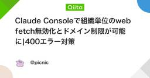
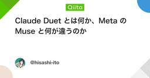
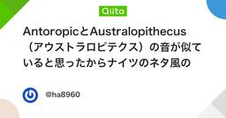
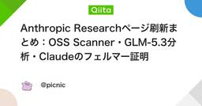
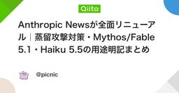
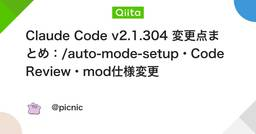
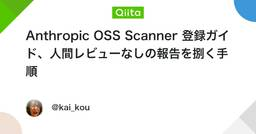
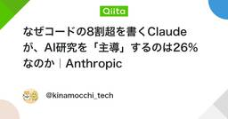
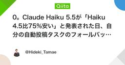
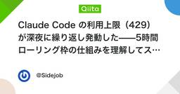


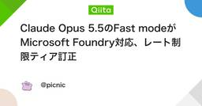